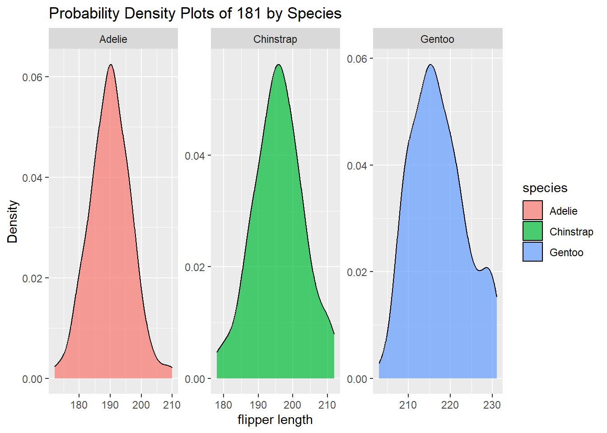

#install.packages("palmerpenguins")
library(tidyr)
library(palmerpenguins)
library(ggplot2)
data("penguins")
str(penguins)tibble [344 × 8] (S3: tbl_df/tbl/data.frame)
$ species : Factor w/ 3 levels "Adelie","Chinstrap",..: 1 1 1 1 1 1 1 1 1 1 ...
$ island : Factor w/ 3 levels "Biscoe","Dream",..: 3 3 3 3 3 3 3 3 3 3 ...
$ bill_length_mm : num [1:344] 39.1 39.5 40.3 NA 36.7 39.3 38.9 39.2 34.1 42 ...
$ bill_depth_mm : num [1:344] 18.7 17.4 18 NA 19.3 20.6 17.8 19.6 18.1 20.2 ...
$ flipper_length_mm: int [1:344] 181 186 195 NA 193 190 181 195 193 190 ...
$ body_mass_g : int [1:344] 3750 3800 3250 NA 3450 3650 3625 4675 3475 4250 ...
$ sex : Factor w/ 2 levels "female","male": 2 1 1 NA 1 2 1 2 NA NA ...
$ year : int [1:344] 2007 2007 2007 2007 2007 2007 2007 2007 2007 2007 ...summary(penguins) species island bill_length_mm bill_depth_mm
Adelie :152 Biscoe :168 Min. :32.10 Min. :13.10
Chinstrap: 68 Dream :124 1st Qu.:39.23 1st Qu.:15.60
Gentoo :124 Torgersen: 52 Median :44.45 Median :17.30
Mean :43.92 Mean :17.15
3rd Qu.:48.50 3rd Qu.:18.70
Max. :59.60 Max. :21.50
NA's :2 NA's :2
flipper_length_mm body_mass_g sex year
Min. :172.0 Min. :2700 female:165 Min. :2007
1st Qu.:190.0 1st Qu.:3550 male :168 1st Qu.:2007
Median :197.0 Median :4050 NA's : 11 Median :2008
Mean :200.9 Mean :4202 Mean :2008
3rd Qu.:213.0 3rd Qu.:4750 3rd Qu.:2009
Max. :231.0 Max. :6300 Max. :2009
NA's :2 NA's :2 unique(penguins$species)[1] Adelie Gentoo Chinstrap
Levels: Adelie Chinstrap Gentooflipper_length = penguins$flipper_length_mm
summary(flipper_length) Min. 1st Qu. Median Mean 3rd Qu. Max. NA's
172.0 190.0 197.0 200.9 213.0 231.0 2 flip_len = na.omit(flipper_length)
summary(flip_len) Min. 1st Qu. Median Mean 3rd Qu. Max.
172.0 190.0 197.0 200.9 213.0 231.0 # Select one continuous variables for probability density plots
selected_vars <- c(penguins$flipper_length_mm)
selected_vars2 <- c(penguins$bill_length_mm)
selected_vars3 <- c(penguins$body_mass_g)
# Create probability density plots for each variable by species
penguin_density_plots <- ggplot(penguins, aes(x = selected_vars, fill = species)) +
geom_density(alpha = 0.7) +
facet_wrap(~species, scales = "free") +
labs(title = paste("Probability Density Plots of", selected_vars, "by Species"), x = "flipper length", y = "Density")
print(penguin_density_plots)